| 平台名称 |
主要用途 |
访问地址 |
| 电子税务局 |
增值税申报、发票开具、企业所得税、社保费等企业税务事项 |
各省税务局官网入口 |
| 自然人电子税务局 |
个税申报（含工资薪金、经营所得等）、专项附加扣除填报、完税证明开具等 |
etax.chinatax.gov.cn |
| 自然人电子税务局（扣缴端） |
代扣代缴员工个人所得税（工资薪金）、经营所得个税申报等 |
下载客户端安装使用 |
💡 简单记忆：公司日常税务办理用电子税务局；个税申报（无论个人自报还是财务代报）均可通过自然人电子税务局或扣缴端完成，两者均支持个税相关业务。
重要变化（2023年起全面推行）：企业无需单独开通"企业账户"，改为由办税人员用个人账号登录后关联企业。首次使用需先完成个人实名注册。
1
进入本省电子税务局官网（以广西为例），在首页找到 【电子税务局】 或 【我要办税】 入口，点击进入。
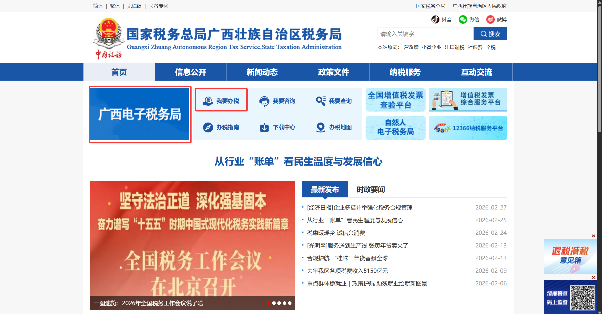
2
进入电子税务局后，点击页面右上角【登录】按钮，进入登录页面。
3
在登录页面中点击 【自然人业务】→【用户注册】，按照页面提示依次填写姓名、身份证号码、手机号码等信息，完成实名认证后设置登录密码即注册成功。
💡 也可在手机电子税务局 APP 上完成注册操作，路径为【我的-立即登录-用户注册】，按提示填写。
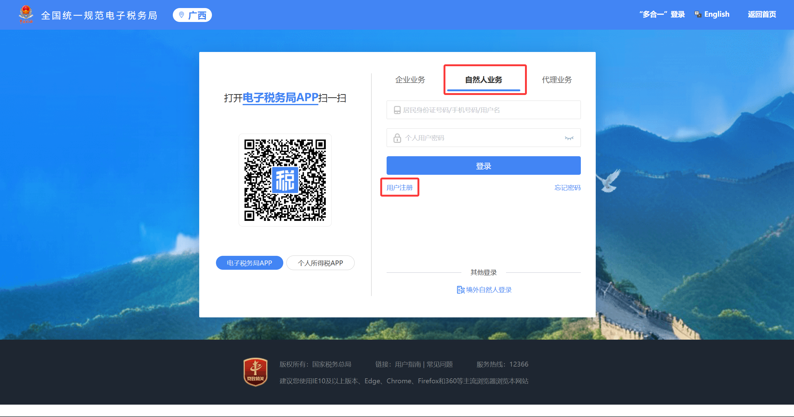
| 登录入口 |
验证方式 |
适用场景 |
| 🏢 企业业务 |
个人密码 + 短信验证码 |
财务人员、法人、办税员代企业办税 |
| 👤 自然人业务 |
身份证号/手机号/用户名 + 密码 + 短信验证码 |
个人办税、查询个人信息 |
| 🤝 代理业务 |
个人密码 + 短信验证码 |
税务师事务所、代理记账公司 |
| 📱 扫码登录 |
手机APP（个人所得税APP / 电子税务局APP）扫码 |
快速免密登录，推荐日常使用 |
💡 推荐使用扫码登录：打开手机电子税务局 APP，在网页端登录界面选择【扫码登录】，用 APP 扫描二维码即可快速登录，无需每次输入密码。
一个人可以同时担任多家企业的办税员或法人。登录后通过账户中心切换身份，无需重新登录。
1
以自然人身份登录后，点击页面右上角的头像图标，在下拉菜单中选择 【账户中心】。
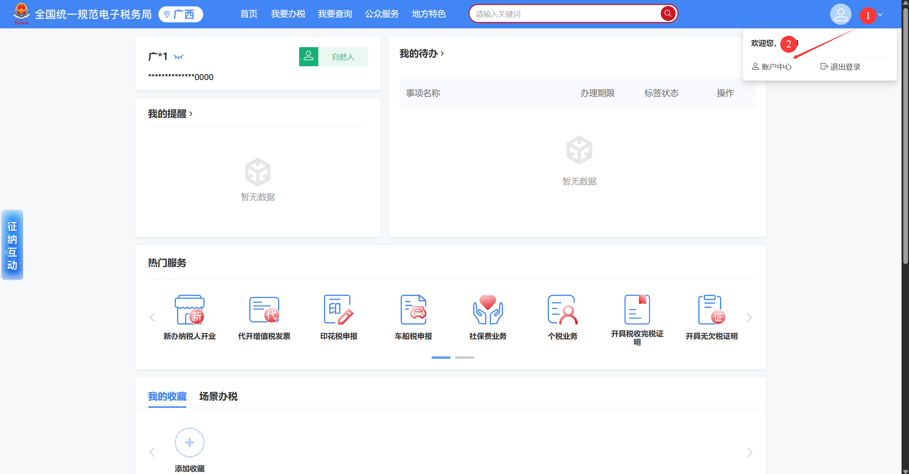
2
进入账户中心后，点击 【身份切换】，系统展示该账号关联的所有企业列表，点击目标企业名称右侧的【切换】，即可切换至该企业的办税界面，无需重新输入密码。
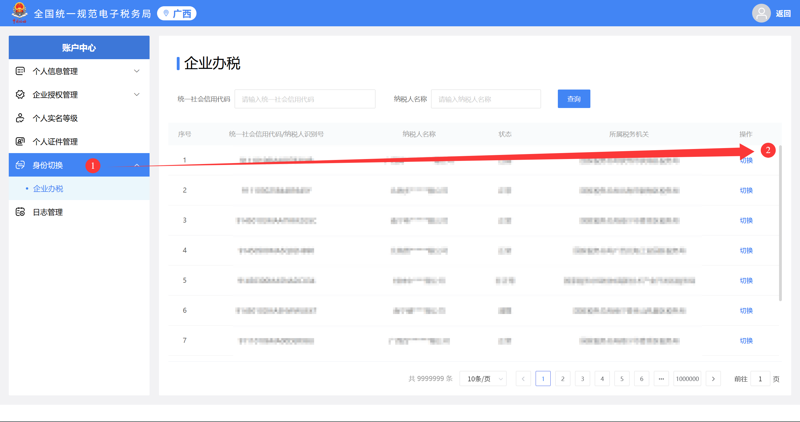
1
在登录页面点击 【忘记密码】，选择通过手机号验证方式重置。
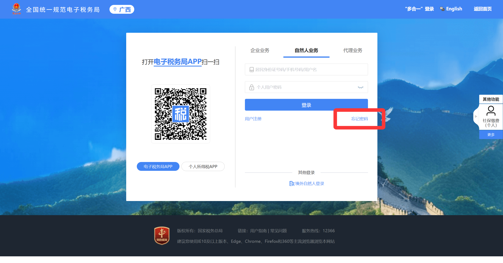
3
验证通过后，设置新密码（8位以上，须包含字母和数字），确认后即可用新密码登录。
⚠️
若手机号已停用或换号，可按以下顺序尝试：
- 使用"个人所得税"APP 扫码登录电子税务局，登录成功后在个人账户中心修改绑定手机号；
- 或在自然人电子税务局登录后切换至电子税务局，进入个人账户中心，通过银联手机号验证修改默认登录手机号；
- 以上方式均无法操作时，携带身份证前往办税服务厅，由工作人员协助线下重置。
👤
第二部分：自然人电子税务局（网页端 + APP）
访问地址：网页端 → etax.chinatax.gov.cn
手机端：下载"个人所得税"APP（国家税务总局官方，苹果/安卓均可）
主要用于：个税申报（工资薪金、经营所得等）、专项附加扣除填报、完税证明开具、年度汇算清缴等个人业务。
1
建议使用个人所得税 APP 完成注册，打开 APP 后依次点击 【我的】→【注册/登录】→【注册】→【人脸识别认证注册】。
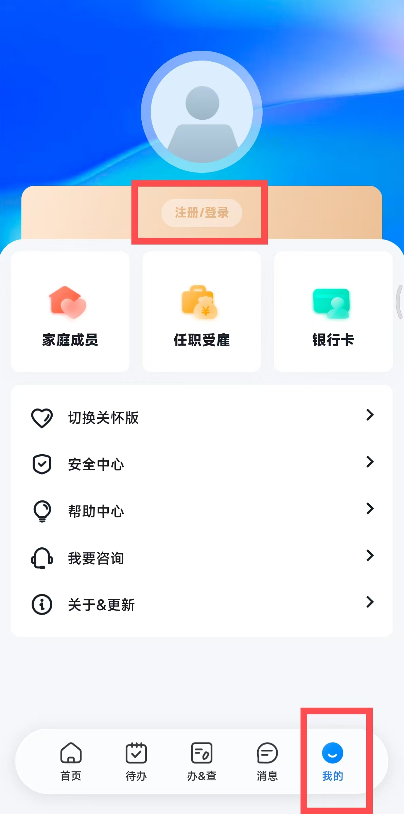
2
填写证件号码和姓名，拖动滑块完成验证后，按提示进行人脸识别，系统与公安数据库比对通过即完成实名认证。
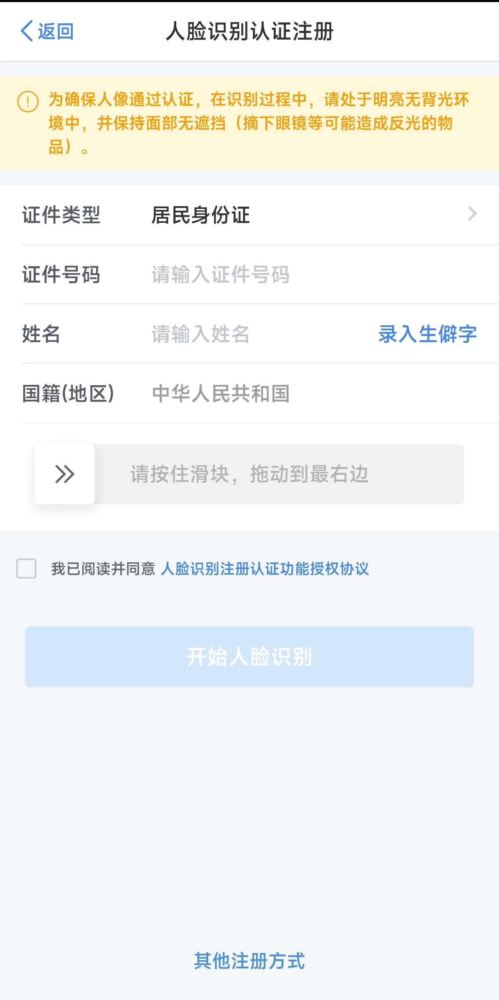
3
按要求设置登录密码，注册完成。此后可用手机号 / 身份证号 / 用户名任意一种方式登录。
| 验证方式 |
说明 |
推荐程度 |
| 📱 手机号 + 密码 |
最常用方式，输入手机号和登录密码 |
⭐⭐⭐⭐ |
| 🪪 身份证号 + 密码 |
与手机号登录等效，任选其一 |
⭐⭐⭐ |
| 🖐️ 指纹 / 手势登录 |
APP端支持，开启后可免密快速登录，需先在设置中绑定 |
⭐⭐⭐⭐⭐ |
1
在登录页点击 【忘记密码】，输入注册手机号，获取短信验证码。
2
验证码通过后，重新设置新密码即可。
⚠️ 若手机号已更换，可在APP端通过本人银行卡验证身份后重置密码，或线下前往办税服务厅修改手机号。
扣缴端是安装在电脑本地的客户端软件，用于代扣代缴员工工资薪金个人所得税及经营所得个税申报等业务。
下载地址：自然人电子税务局网页端（etax.chinatax.gov.cn）首页 → 【扣缴客户端下载】
1
前往自然人电子税务局官网，下载对应操作系统的扣缴端安装包（Windows版），按提示完成安装。
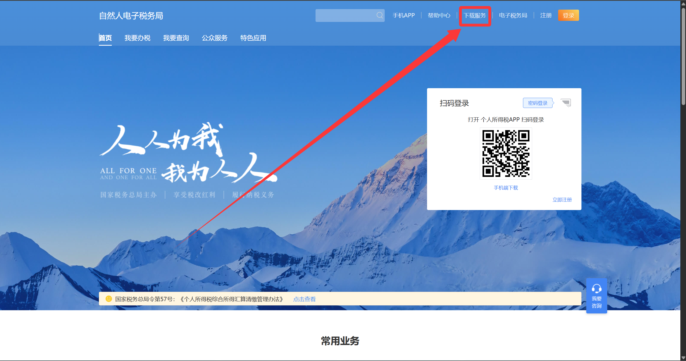
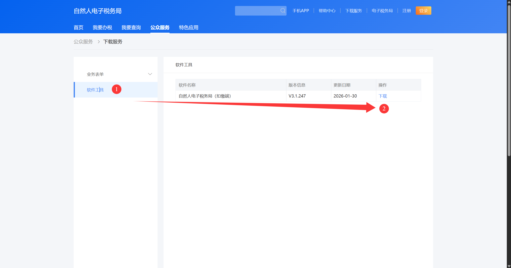
2
首次打开软件，在初始化界面依次输入企业税号及办税人信息，点击 【立即体验】 完成初始化。
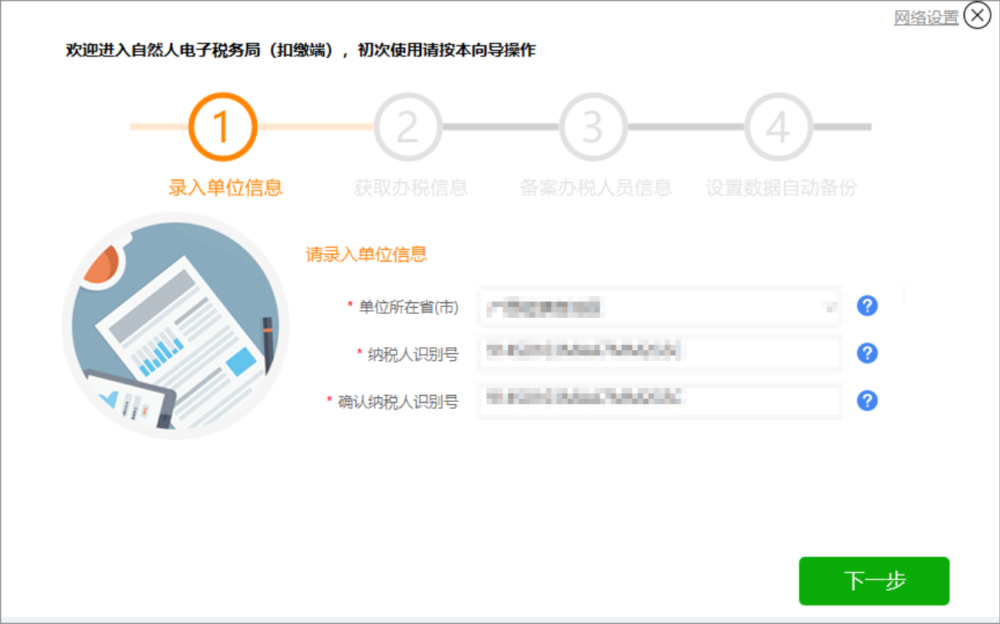
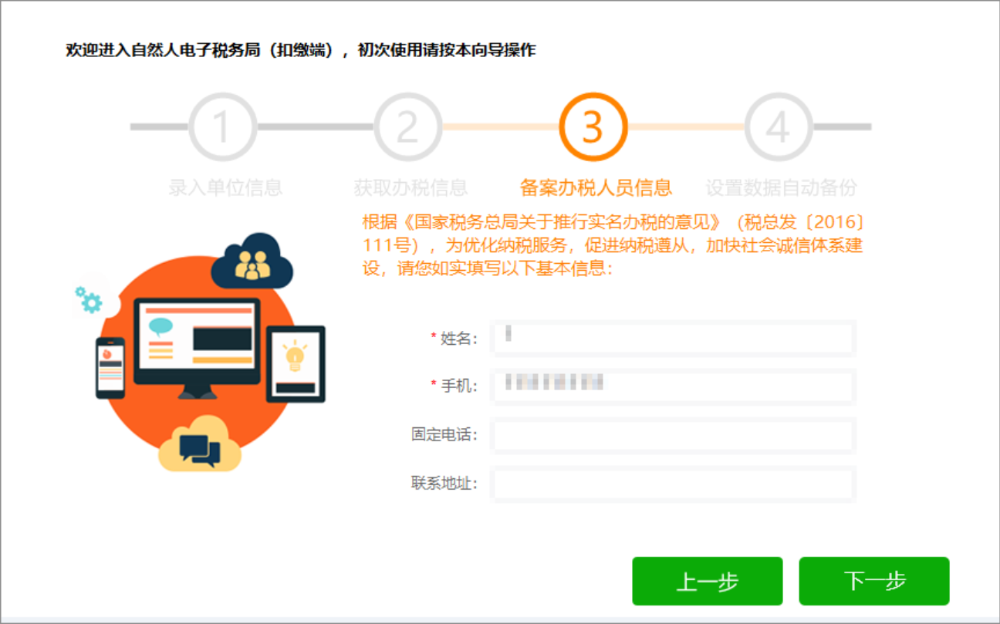
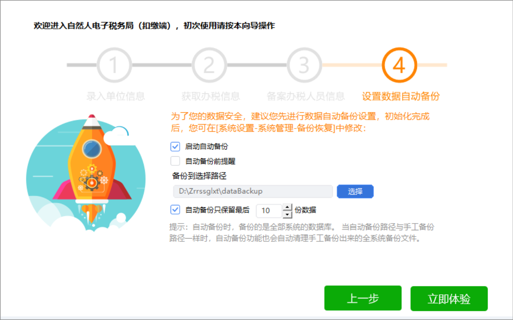
3
初始化完成后进入登录界面，可选择以下任意方式登录：实名登录、申报密码登录 或 个人所得税 APP 扫码登录。
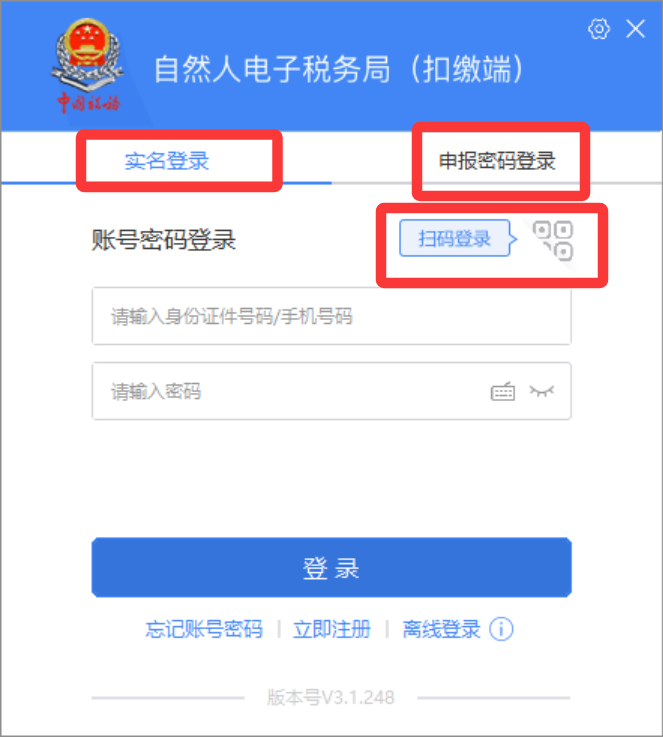
4
进入软件后，可点击页面右上角下载操作手册，便于查阅各功能使用说明。
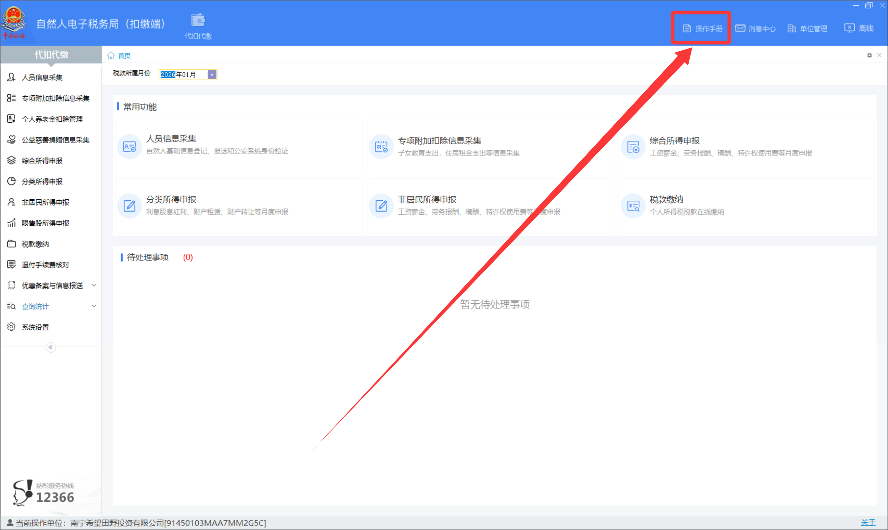
| 问题 |
原因分析 |
解决方案 |
| 登录时提示"账号不存在" |
未注册或输入账号有误 |
确认账号类型（手机号/身份证号），或重新注册 |
| 短信验证码收不到 |
手机信号差、号码有误或被屏蔽 |
检查手机信号；确认号码正确；等待1分钟后重新发送；联系运营商确认是否屏蔽 |
| 提示"实名认证失败" |
姓名/身份证号填写有误 |
核对姓名与身份证号是否一致；如仍失败拨打12366 |
| 登录后找不到关联企业 |
该身份证未被企业添加为办税员 |
联系企业法人或主管税务机关，将本人身份证号添加为办税员后重新登录 |
| 密码连续输错被锁定 |
密码错误次数超过系统限制（通常5次） |
等待24小时自动解锁，或通过"忘记密码"流程重置密码 |
| 人脸识别反复失败 |
光线不足、摄像头遮挡或网络不稳定 |
在光线充足处重试；清洁摄像头；切换至WiFi网络；仍失败可尝试更换设备 |
| 企业端登录后无操作权限 |
办税员权限未开通或已过期 |
联系企业法人登录后在【人员权限管理】中重新授权 |
⚠️
以下行为存在安全风险，请务必注意：
- 不要将登录密码告知他人，包括自称"税务局工作人员"的陌生来电，不要在各种小程序上付钱
- 不要在公共电脑上保存密码或勾选"记住密码"
- 使用完毕后务必点击【退出登录】，不要直接关闭浏览器
- 定期更换密码（建议每6个月更换一次），密码勿与其他平台重复
- 发现账号异常登录记录，立即修改密码并拨打 12366 报告
| 渠道 |
说明 |
适用情况 |
| 📞 拨打 12366 |
国家税务总局纳税服务热线，工作日 8:30–17:00 |
账号问题、操作咨询、政策疑问等各类问题 |
| 🏢 前往办税服务厅 |
携带本人身份证及企业相关证件 |
手机号更换、实名认证失败、账号被锁等无法线上解决的问题 |
| 💬 在线客服 |
各省电子税务局网页端或电子税务局APP"征纳互动"入口 |
操作指引、简单问题快速解答 |
✅
本章小结：
- 企业日常办税：登录本省电子税务局 → 自然人业务入口登录 → 账户中心切换企业身份
- 个税申报（个人自报或财务代报）：使用"自然人电子税务局（扣缴端）" 或 etax.chinatax.gov.cn，两者均支持工资薪金、经营所得等个税业务
- 代扣代缴工资个税及经营所得申报：下载安装自然人电子税务局扣缴端客户端
- 遇到任何问题，优先拨打 12366 或前往办税服务厅寻求帮助